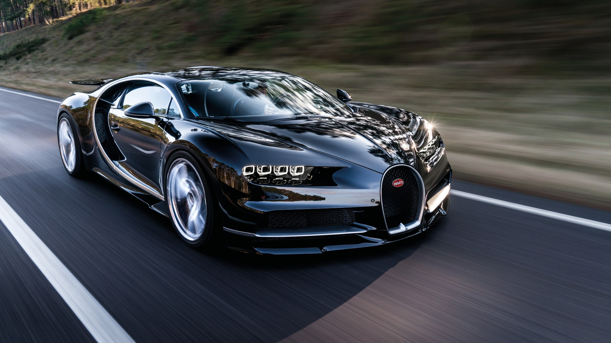
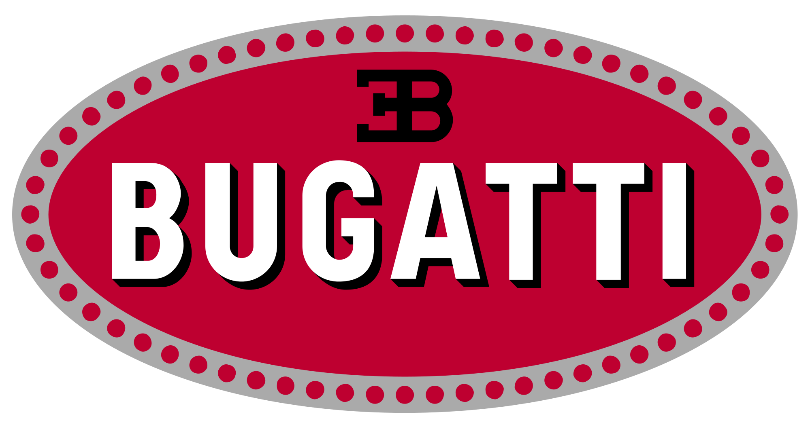

Bugatti
Geschichte der Marke Bugatti
Gründer war Ettore Bugatti. Die Produktion lief von 1909 bis 1963. Die von Bugatti gefertigten Fahrzeuge gehörten zu den erfolgreichsten Rennwagen sowie den edelsten und besten Sportwagen und Limousinen ihrer Zeit und machten die Marke zu einer Legende. Der ursprüngliche Bugatti-Betrieb wurde nach dem Zweiten Weltkrieg eingestellt. Seitdem wurde die Marke zweimal neubelebt. Zunächst gründete Romano Artioli 1987 die Bugatti Automobili SpA in Italien. 1998 übernahm der Volkswagen-Konzern die Design- und Namensrechte. Seitdem existiert Bugatti weiter als Bugatti Automobiles S.A.S.
Hard Facts
| Gründung | Mitarbeiter | Umsatz |
|---|---|---|
| 1909 in Molsheim, Frankreich | 60 | 213 Mio. EUR |
